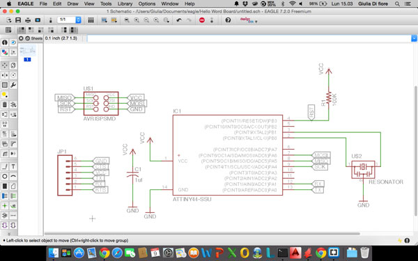
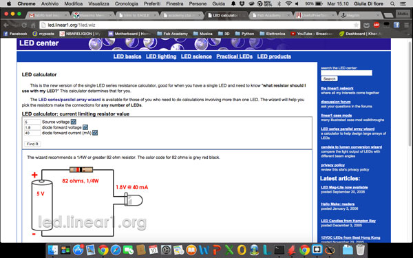
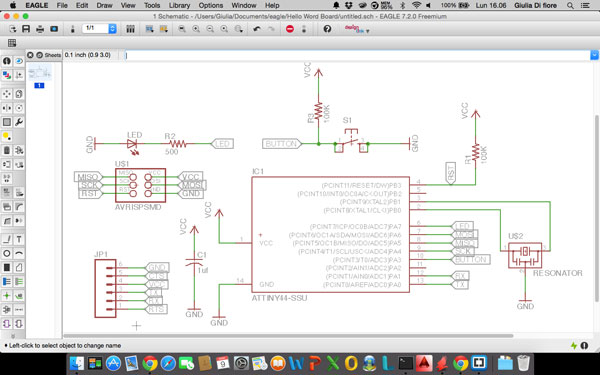
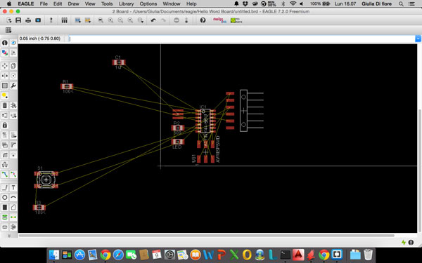
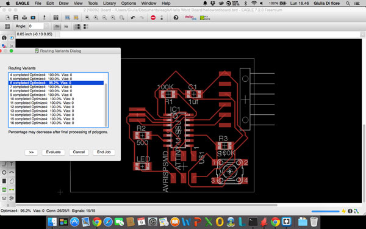
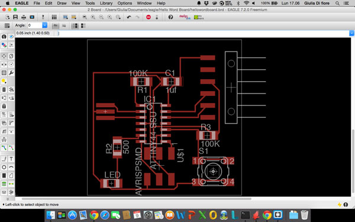
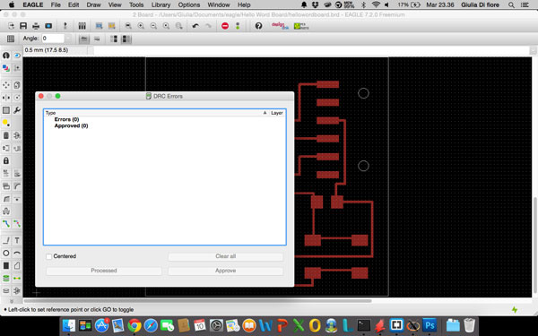
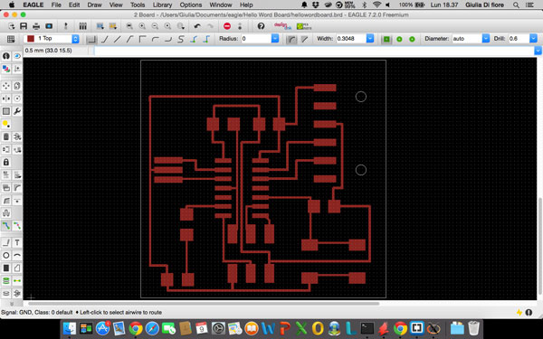
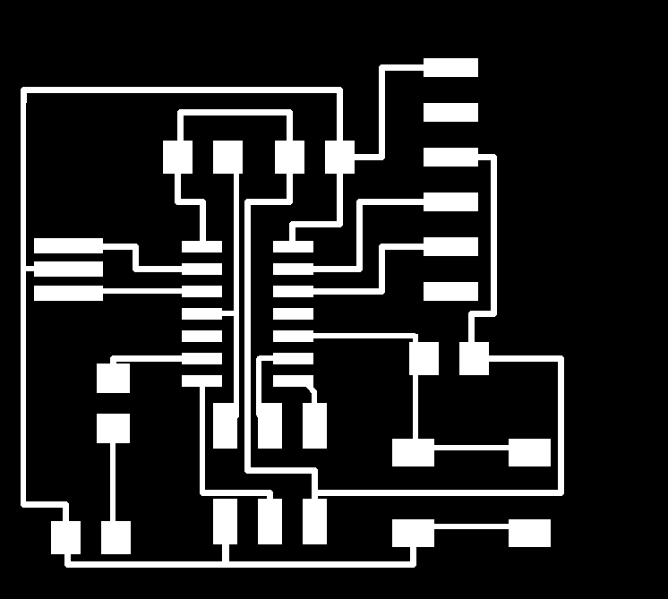

The assignment of this week is redraw the echo hello-world board, add (at least) a button and LED (with current-limiting resistor), check the design rules, and make it. (Extra credit: simulate its operation)
To layout and modify the circuit board for this assignment we use EAGLE.
EAGLE is a multiplatform software, its freeware license, and its one of the most used.
In EAGLE we find 2 different view of the same project: the "schematic" and the "board layout".
The "schematic" view is a rapresentation of the circuit whit a drawing, where every symbol represent real-world electronic components.
The "board layout" shows how the electrical componets and traces will be realized on the board.
First, we start drawing the original echo hello-world board, that is composed by:
This is the echo hello-word board in the schematic view:

Once placed the initial components, I added to the circuit the part requested in the assignment of the Week:

According to the calculations, the resistance to use must be of minimum 82 ohms, we used a 499 ohm.
Once added and connected all the components to the schematic the end result is this:

Once finished arranging the components in the schematic, you have to go to the Board Layout. Here, you have to reposition the components and draw routes in the best way possible.
then, you start by placing the components considering the connections between them

Once positioned, I used the autoroute to check that the positions of the components were correct, repeating after each movement of one of them: once got 100% in all the possibilities it means that the position of the components is correct.

Then I checked the various routes, modifying those too close (to make more simple soldering) and trying to get 90 ° angles, and this is the final result:

Before exporting our circuit, you must always check the DR (Drawing Rules) to be sure that everything is in place. Just press the button and the DRC program performs a check on what we designed.

Having found no error, you can proceeding with the export of the circuit. For export must first turn off all the layers taking on only the first one.

To export the track, just go to "export" and select "image" (in the next panel make sure to select the "Monochrome"). Will then create a .png file that will be the basis for realizing our board.

Using Gimp I modified the board by adding an outer edge and customizing it by putting my name.
This is my echo hello-world board:
{kind=link}